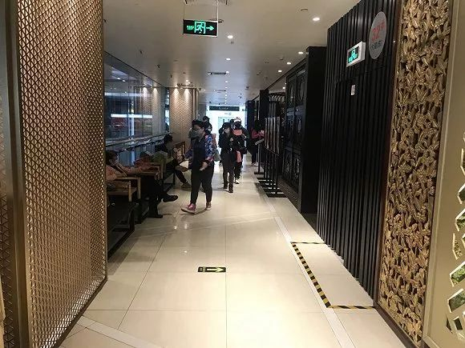
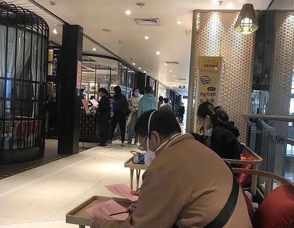
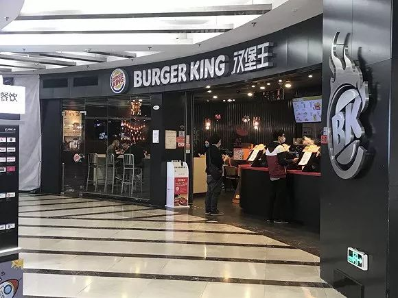

封城20天，五位武汉餐饮老板的生存日记
原文链接 备份链接 《创新经济战疫计划》，是燃财经在新型肺炎疫情期间推出的特别栏目，关注创新经济企业遇到的新难题、商讨应该采取的新对策，希望能够帮助中小企业一起战胜挑战、把握机会。本文是第7期。查看前6篇请点击《哪些行业正在逆势爆 …
图片来源：陶陶居
记者：吴容 卢奕贝 编辑：牙韩翔
“
陶陶居广州正佳广场店表示，中午收到了政府和商业地产的通知，暂时依旧只能提供外卖。
”
“昨天不是说恢复堂食了吗，怎么突然又没得吃了？”
2月21日，早茶爱好者在广州正佳陶陶居扑了个空。店门口依然拉起黄色警戒线不让入内，店员面露尴尬向特地前来的客人解释，“刚刚11点多，政府的人来检查了，暂时还是只能外卖。”店员只能拿出简易的外卖自提菜单，安抚白跑一趟的食客们。


正佳广场陶陶居紧急叫停堂食，食客们在浏览外卖自提菜单。（图片来源：吴容）
除天河区外，位于广州白云区的陶陶居门店也已被市场监管部门叫停。
2月20日，广东省发布《广东省餐饮服务业新冠肺炎防控工作指引》，指导餐饮经营单位在疫情期间逐步恢复堂食服务。
按照工作指引，广东以县（市、区）为单元划分防控区，并根据疫情现状及发展态势，按照近14天新增报告确诊病例数、近14天新增报告本地感染确诊病例数、近14天是否发生本地暴发疫情等标准，分为Ⅰ级、Ⅱ级、Ⅲ级、Ⅳ级共四个等级。

图片来源：广州日报
广东省新冠肺炎防控指挥部办公室疫情防控组副组长耿庆山介绍，由于广东目前没有Ⅰ级防控区，因此根据指引，具备合法经营资格的餐饮店均可开业，但在堂食上有所限制。Ⅱ级防控区暂停堂食服务，但可开放包间服务。Ⅲ级防控区进行限制性堂食服务，提倡减少桌椅摆放、隔桌安排就餐，用餐人员进入餐饮经营单位前必须测量体温，每桌登记至少一名就餐客人的姓名和联系方式。
2月20日下午4点，陶陶居在其微信公众号发布消息称，作为广东省餐饮协会复工复业示范企业，陶陶居位于广州的12家门店逐步开门迎客，位于3级区的陶陶居店铺开放大厅堂食和包房服务，2级区的店铺只开放包房消费。
正佳广场当天也在官方微博上公布，商场内的餐饮店铺将从2月21日起全面恢复堂食，营业时间从早上10时至晚上10时。
这让所有广东餐饮从业者感到振奋。一位深圳餐厅老板对界面新闻表示，已有顾客电话询问订座事宜，并开始制作堂食的海报宣传。如果陶陶居这个周末堂食营业顺利的话，他们下周也立即开启堂食。
不过，实际情况并不理想。界面新闻在天河路商圈和正佳广场走访了解到，和陶陶居一样原计划今日恢复堂食的山东老家，亦收到了政府和物业相关通知，依旧只能提供外卖服务；蔡澜点心店、太兴茶餐厅表达了类似的说法，中午广州食药监和商业地产的人来检查，他们对顾客的期待感到抱歉。


正佳广场内部分餐厅在检查人员走后，悄悄开放了堂食。（图片来源：吴容）
也有部分品牌选择观望或悄悄开放了堂食。正佳广场内一家泰式料理店称检查人员刚走，他们需要请示领导是否开放堂食，在其隔壁的一家火锅串串香店已有三桌食客在店内用餐，店主表示，“检查人员走了，（食客）在店内用餐需要一前一后分开落座。”
此外，其他品牌包括广州酒家、炳胜、太二酸菜鱼、外婆家等仍未恢复堂食，有的大门紧闭，有的则选择提供外卖。
除了广州，深圳市也出台了类似的规定。
按照指引，深圳没有I级防控区；福田区、南山区、宝安区、龙岗区属于Ⅱ级防控区暂停大厅堂食服务，但可以在包间里就餐；另外，罗湖区、龙华区、坪山区和光明区为Ⅲ级防控区，要求限制性堂食服务，但要严格依据省餐饮服务业新冠肺炎防控工作指引执行；盐田区和大鹏新区为Ⅳ级防控区，可以正常开展餐饮服务。
而界面新闻电话咨询了深圳分别位于南山、福田、罗湖、盐田的5家餐厅，均表示现在不接受堂食，仅限外卖。
深圳陶陶居方面表示，位于Ⅱ级防控区三家门店开放堂食，但只限包间。位于南山区万象天地门店店员告诉界面新闻，店内只有3个包间，也不能提前预订，要去现场排队，建议客人提前电话咨询。
未经授权 禁止转载

原文链接 备份链接 《创新经济战疫计划》，是燃财经在新型肺炎疫情期间推出的特别栏目，关注创新经济企业遇到的新难题、商讨应该采取的新对策，希望能够帮助中小企业一起战胜挑战、把握机会。本文是第7期。查看前6篇请点击《哪些行业正在逆势爆 …
原文链接 备份链接 【财新网】（记者 方祖望）新冠肺炎疫情持续蔓延，居民外出就餐意愿骤降。此前，黄冈、温州等地发布“禁足令”，规定每户每两天派一个人出门采买物资，这类防控措施更令餐饮行业举步维艰。 珠海市香洲区市场监督管理局昨日（2 …
原文链接 备份链接 相比其它行业，餐饮业是最早遭受疫情冲击的行业之一。这个春节，餐饮人正在遭受极大的心智和经营能力的考验 图/法新 文｜《财经》记者 杨立赟 编辑｜余乐 一个月前，应乾坤决定留在杭州过年的时候，没想过如今的自己会进退两难。 …
原文链接 备份链接 图片来源：法庭直播截图 “ 2月21日上午，上海市青浦区人民法院在院部第二法庭采用互联网在线庭审模式，依法公开开庭“云审理”首例涉疫情防控妨害公务案件。在核实本案的事实、证据并听取各方意见后，法庭认定被告人张某行为构成 …
原文链接 备份链接 各级政府的绩效考评正在从“增长锦标赛”逐渐转为侧重治理能力、治理体系的新绩效评估框架，这次疫情可能是转折点。如何提升市场应对突发事件的能力和韧性，也是体现国家综合治理能力提升的重要标志 2020年2月12日，位于武汉体 …